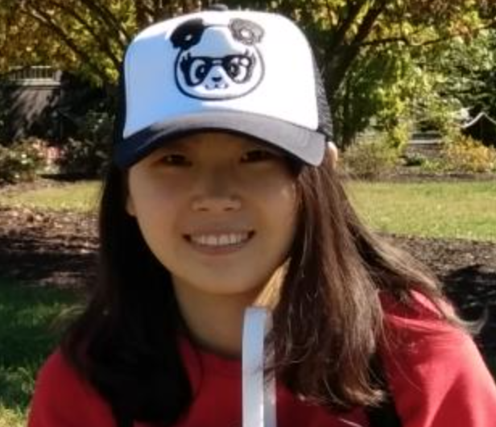

name:opening **FIRM Guiding Principles for scientific software development and stewardship** <br> Joshua T. Vogelstein | {[BME](https://www.bme.jhu.edu/),[ICM](https://icm.jhu.edu/),[CIS](http://cis.jhu.edu/),[KNDI](http://kavlijhu.org/)}@[JHU](https://www.jhu.edu/) <a href="https://neurodata.io"> <img src="images/neurodata_purple.png" style="height:450px;"/> </a> <!-- <img src="images/funding/jhu_bme_blue.png" STYLE="HEIGHT:95px;"/> --> <!-- <img src="images/funding/KNDI.png" STYLE="HEIGHT:95px;"/> --> <!-- <font color="grey"></font> --> .foot[[jovo@jhu.edu](mailto:jovo@jhu.edu) | <https://neurodata.io/> | [@neuro_data](https://twitter.com/neuro_data)] --- ### Background - college: wash u - gap year: wash u - grad school: jhu - post doc: duke - faculty: jhu --- ### FIRM Guiding Principles for Our Packages Code should be 1. Findable 2. Installable 3. Runnable 4. Modifiable --- ### Findable - Make the code open source on a searchable code repository (e.g., [github](https://github.com/) or [gitlab](gitlab)). - Generate a permanent Digital Object Identifier (DOI) so that you can freely move the code to other web-servies if you so desire without breaking the links (e.g., using [zenodo](https://zenodo.org/)). - Add a license so that others can freely use your code without worrying about legal ramifications (see [here](https://opensource.org/licenses) for options). --- ### Installable - Provide installation guidelines, including *1-line installation* instructions with system requirements (including hardware and OS), software dependencies, and expected install time. - Deposit your code into a standard package manager, such as [CRAN](https://cran.r-project.org/) for R or [PyPi](https://pypi.org/) for Python. You might also provide a container or virtual machine image with your package pre-installed, for example, using [Docker](https://www.docker.com/), [Singularity](https://www.sylabs.io/docs/) or [Gigantum](https://gigantum.com/). --- ### Runnable - Provide a demo, including requisite data, expected results, and runtime on specified hardware. The demo should be simple, intuitive, and fast to run. We recommend using [Rmarkdown](https://rmarkdown.rstudio.com/) for R and a [Jupyter Notebook](http://jupyter.org/) for Python. - Write a readme with a quick start guide, including installation and a simplified (plain text) version of the demo. - Make sure each function includes auto-generated documentation. We recommend [Roxygen](https://cran.r-project.org/web/packages/roxygen2/vignettes/roxygen2.html) for R and [Sphinx](http://www.sphinx-doc.org/en/master/) for Python. --- ### Modifiable - Include contribution guidelines, including: - style guidelines ([Google’s](https://google.github.io/styleguide/Rguide.xml) or [Hadley’s](http://adv-r.had.co.nz/Style.html) for R, or [PEP8](https://www.python.org/dev/peps/pep-0008/) for Python) - bug reports, - pull requests, and - feature additions. - Write unit tests for each function. Examples are [testthat](http://testthat.r-lib.org/) for R and [pytest](https://docs.pytest.org/en/6.2.x/) for Python. - Incorporate continuous integration, for example, using either [TravisCI](https://travis-ci.org/) or [CircleCI](https://circleci.com/). --- - Add the following [badges](https://shields.io/#/) to your repo: - DOI, - license, - stable release version so people know which release they are on (from package manager), - [documentation](https://readthedocs.org/) to indicate that you generated documentation, - [code quality](https://codeclimate.com/) to indicate that your code is written using modern best practices, - [coverage](https://coveralls.io/) to indicate the extent to which you have written tests for your functions, - [build status](https://www.docker.com/) to indicate whether the virtual machine that contains the latest version of your code is running, - total number of downloads, - Finally, benchmarks establishing current performance (using appropriate metrics) on standard problems, and better yet also comparing to other standard methods. Ideally, the code the generate the benchmark numbers are provided in Jupyter notebooks provided in your Gigantum project. --- ### Our Software Goals 1. Develop, and maintain our packages 2. **PR upstream packages with our algorithms** --- ### Some of Our Tools 1. Data Management, Visualization, and Wrangling 1. [brainlit](https://github.com/neurodata/brainlit) 2. [ndmg](https://github.com/BIDS-Apps/ndmg) 3. [m2g](https://github.com/neurodata/m2g) 2. Statistical Machine Learning 4. [ProgLearn](https://github.com/neurodata/ProgLearn) 5. [hyppo](https://github.com/neurodata/hyppo) 6. [graspologic](https://github.com/microsoft/graspologic) 7. [LOL](https://github.com/neurodata/lol) --- ### Acknowledgements <div class="small-container"> <div class="centered">Celine Drieu</div> </div> <div class="small-container"> <div class="centered">Javier How</div> </div> <div class="small-container"> <img src="faces/jesus.jpg"/> <div class="centered">Jesús Arroyo</div> </div> <div class="small-container"> <img src="faces/loftus.jpg"/> <div class="centered">Alex Loftus</div> </div> <div class="small-container"> <img src="faces/alig.jpg"/> <div class="centered">Ali Geisa</div> </div> <div class="small-container"> <img src="faces/ali_saad.jpg"/> <div class="centered">Ali Saad-Eldin</div> </div> <div class="small-container"> <img src="faces/pedigo.jpg"/> <div class="centered">Ben Pedigo</div> </div> <div class="small-container"> <img src="faces/ebridge.jpg"/> <div class="centered">Eric W. Bridgeford</div> </div> <div class="small-container"> <img src="faces/hao.jpg"/> <div class="centered">Haoyin Xu</div> </div> <div class="small-container"> <img src="faces/jaewon.jpg"/> <div class="centered">Jaewon Chung</div> </div> <div class="small-container"> <img src="faces/jayanta.jpg"/> <div class="centered">Jayanta Dey</div> </div> <div class="small-container"> <div class="centered">Jong Shin</div> </div> <div class="small-container"> <div class="centered">Kaleab A Kinfu</div> </div> <div class="small-container"> <img src="faces/meghana.png"/> <div class="centered">Meghana Madhyastha</div> </div> <div class="small-container"> <img src="faces/powell.jpg"/> <div class="centered">Mike Powell</div> </div> <div class="small-container"> <img src="faces/ross.jpg"/> <div class="centered">Ross Lawrence</div> </div> <div class="small-container"> <img src="faces/sambit.jpg"/> <div class="centered">Sambit Panda</div> </div> <div class="small-container">  <div class="centered">Tingshan Liu</div> </div> <div class="small-container"> <img src="faces/tommy_athey.jpg"/> <div class="centered">Tommy Athey</div> </div> <div class="small-container"> <img src="faces/vikram.jpg"/> <div class="centered">Vikram Chandrashekhar</div> </div> <div class="small-container"> <div class="centered">Alisha Kodibagkar</div> </div> <div class="small-container"> <div class="centered">Diane Lee</div> </div> <div class="small-container"> <div class="centered">Rebecca Yin</div> </div> <div class="small-container"> <img src="faces/ronan.jpg"/> <div class="centered">Ronan Perry</div> </div> <div class="small-container"> <div class="centered">Shreya Singh</div> </div> <div class="small-container"> <img src="faces/vivek.jpg"/> <div class="centered">Vivek Gopalakrishnan</div> </div> <div class="small-container"> <div class="centered">MyCo Le</div> </div><span style="font-size:200%; color:red;">♥, 🦁, 💜, 👪, 🌎, 🌌</span> <img src="images/funding/nsf_fpo.png" STYLE="HEIGHT:95px;"/> <img src="images/funding/nih_fpo.png" STYLE="HEIGHT:95px;"/> <img src="images/funding/darpa_fpo.png" STYLE=" HEIGHT:95px;"/> <img src="images/funding/iarpa_fpo.jpg" STYLE="HEIGHT:95px;"/> <img src="images/funding/KAVLI.jpg" STYLE="HEIGHT:95px;"/> <img src="images/funding/schmidt.jpg" STYLE="HEIGHT:95px;"/> --- ### Questions? <img src="images/lion_and_babygirl.jpg" style="position:absolute; height:80%;"/>